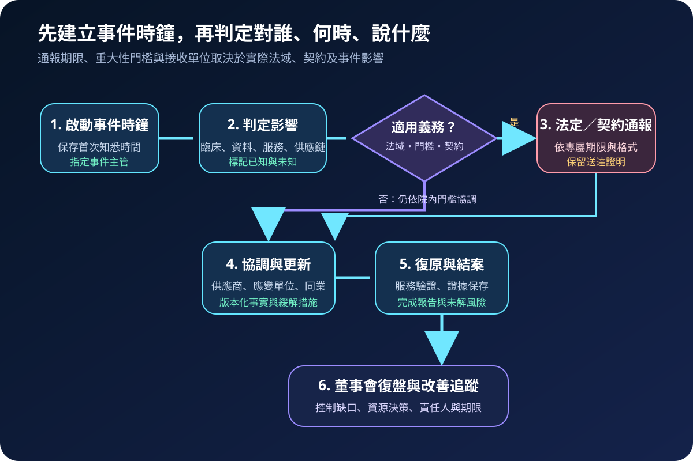
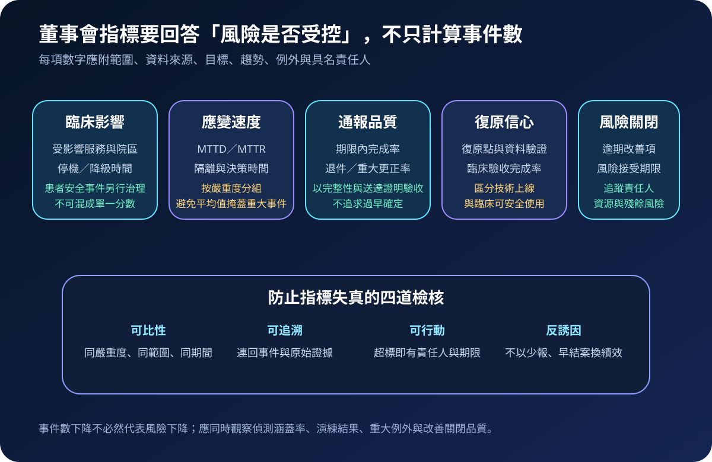

醫療資安國際觀察 · 2026-08-28
醫療資安事件如何通報與監督：從事件時鐘到董事會指標
作者：Dr. William｜醫療資訊與資安治理實務工作者
醫療資安事件同時牽動臨床服務、個人資料、供應商及公共溝通。有效治理不是等調查完成才填表，而是在首次知悉時啟動事件時鐘，以版本化事實支援分級、協調、通報及高階決策。
名詞解釋：從重大事件到可追溯決策
material incident 指達到特定法規、契約或組織重大性門檻的事件；門檻不可跨法域直接套用。regulatory notification 是依適用規範向指定單位通報。MTTD／MTTR 分別衡量偵測與回應／復原時間，但須按嚴重度與服務範圍分組。risk acceptance 應由有權人員具名接受殘餘風險並設定期限。evidence retention 則保存事件、通報、決策與復原證據，使後續調查可以重建。
國際現況與適用邊界
歐盟 NIS2 將醫療納入關鍵部門，原則上要求範圍內的中大型實體採取風險管理措施並通報重大事件。指令第 23 條建立分階段機制：通常自知悉重大事件後 24 小時內提出早期預警、72 小時內提交事件通知，並在事件通知後一個月內提出最終報告；實際適用仍取決於實體類型、會員國轉置法與個案條件。歐盟執委會頁面於 2026 年 7 月更新，並說明 2026 年 1 月提出的修正仍屬提案。美國 CISA CPG 2.0 則是自願性基線，要求演練事件計畫、建立內外部溝通與通報程序，並定期向高階主管更新重大事件。
法域與效力：NIS2 時限是歐盟規範，不是台灣醫院的直接通報期限；CISA 與 NIST 文件也不是台灣法定義務。台灣醫療機構應依本地法規、主管機關要求、契約、資料類型及事件影響建立自己的通報矩陣，必要時由法務與權責單位確認。
規劃：先定義門檻、角色與驗收證據
事件計畫至少涵蓋臨床、資訊、資安、隱私／法務、供應商管理及公共溝通。每一法域與契約需記錄觸發門檻、起算點、接收單位、期限、格式、核准者與送達證明。董事會層級可監督重大服務衝擊、期限內通報率、重大更正率、復原信心、逾期改善項與風險接受期限；技術事件數或平均 MTTR 不宜單獨作為風險下降證據。

實作：把通報與協調做成可演練流程
- 啟動時鐘：記錄首次知悉時間、來源、初始影響與事件主管。
- 建立共同態勢：分開標記已確認、待確認及推估內容，持續更新臨床與技術影響。
- 執行義務判定：由法務／隱私依服務、資料、地點、契約與門檻確認通報路徑。
- 安全協調：預先建立供應商、應變組織與同業聯絡機制，依協議分享入侵指標及緩解措施。
- 保存送達證據：保留版本、核准、提交時間、接收確認、補件與重大修正。
- 復盤關閉：將控制缺口轉成具名改善項、資源決策與期限，追蹤至可驗證關閉。
風險：速度、透明與準確可能互相拉扯
過早下結論會造成誤報，等待完整鑑識又可能錯過期限。共同事件紀錄應允許「目前未知」並保留版本差異。另一風險是以事件數下降獎勵少報，或用平均 MTTR 掩蓋長時間重大停機。指標須連回原始事件、分級與臨床影響；高階報告則應呈現例外、資料品質與未解風險。

可執行清單
- 是否能證明事件首次知悉時間、分級依據與具名主管？
- 是否按法域與契約維護門檻、期限、格式及接收單位？
- 臨床、資安、法務、供應商與公共溝通是否共用版本化事實？
- 通報是否保存核准、送達、補件與重大更正紀錄？
- 董事會指標是否呈現範圍、趨勢、例外、資料品質與責任人？
- 年度演練是否包含外部協調、停機通訊及期限壓力？
來源
- European Commission｜NIS2 Directive: securing network and information systems（更新：2026-07-02；查閱：2026-08-28）
- European Union｜Directive (EU) 2022/2555，Article 23（通過：2022-12-14；查閱：2026-08-28）
- CISA｜Cybersecurity Performance Goals 2.0（頁面未標示發布日；查閱：2026-08-28）
- NIST｜Cybersecurity Framework 2.0（發布：2024-02-26；頁面更新：2026-08-25；查閱：2026-08-28）
內容說明
本文依健康台灣深耕計畫相關治理內容整理，並參考歐盟、美國 CISA 與 NIST 的公開資料，提出台灣醫療機構可採用的事件通報、跨機構協調與高階監督框架；不取代主管機關正式公告、法律意見、契約判讀或個案事件決策。